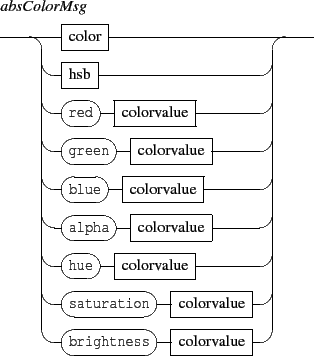

Next: 4.2.2 Relative color messages
Up: 4.2 Color messages
Previous: 4.2 Color messages
Contents
Index



- color: sets an object color. The color scheme is RGBA. When A is not specified, the color is assumed to be opaque. The data range for each color component is [0,255]. Default color value is [0,0,0,255].
- hsb: similar to color but using an HSBA scheme. When A is not specified, the color is assumed to be opaque. The data range for S, B is [0,100], for H [0,360], and [0,255] for A.
- red,green,blue, hue,saturation,brightness,alpha messages address only the specified part of the color.
Grame - Interlude project [ANR-08-CORD-010]